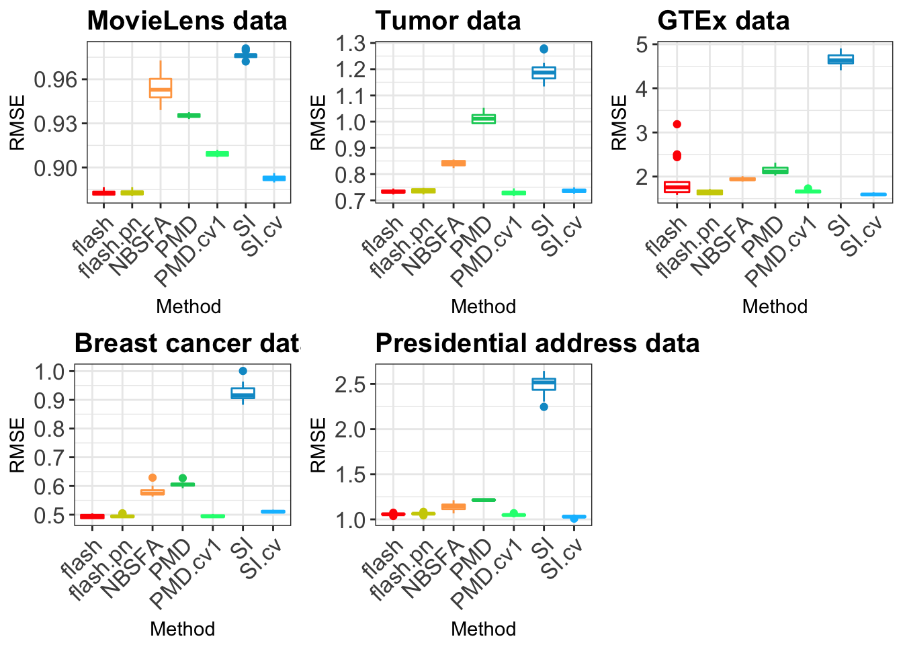

Last updated: 2018-02-11
Code version: d53227e
mkdir Breastcancerhere we use the file ‘example.mat’. the reason we use .mat file is because there is a matlab package in our comparision.
CVPMD_softImpute=function(Y,c_s,K,fold = 10, method = "PMD"){
N = dim(Y)[1]
P = dim(Y)[2]
colindex = matrix(sample(P,P),ncol = fold)
rowindex = matrix(sample(N,N),ncol = fold)
missing= array(0,dim = c(fold,N,P))
foldindex = array(0,dim = c(fold,fold,2))
for(i in 1:fold){
for(j in 1:fold){
foldindex[i,j,1] = i
foldindex[i,j,2] = (i+j) %% fold
}
}
foldindex[which(foldindex == 0)] = fold
for(i in 1:fold){
missing[i, , ] = Y
for(j in 1:fold){
missing[i,rowindex[,foldindex[j,i,1]],colindex[,foldindex[j,i,2]]] = NA
}
missing[i,,which(colSums(missing[i,,],na.rm = T) ==0)] = Y[,which(colSums(missing[i,,],na.rm = T) ==0)]
}
# c_s is the candicate of shrinkage parameter
n_s = length(c_s)
# rmse for each grids
CVRMSE = rep(0,n_s)
minrmse = Inf
opt_s = 0
# for each candidate, we run it N_sim times
for(t_s in 1:n_s){
# for each grid
# each time we set the rmse to zeros
rmse = rep(0,fold)
for(i in 1:fold){
if(method == "PMD"){
res_log = capture.output({out = PMD(missing[i,,], sumabs = c_s[t_s], sumabsv = NULL, sumabsu = NULL,K = K)})
}else{
out = softImpute(missing[i,,], rank.max = K,lambda = c_s[t_s])
}
if(length(out$d)==1){
misshat = (out$d) * out$u %*% t(out$v)
}else{
misshat = out$u %*% diag(out$d) %*% t(out$v)
}
for(j in 1:fold){
# for each fold j
rmse[i] = rmse[i] + sum((Y[rowindex[,foldindex[j,i,1]],colindex[,foldindex[j,i,2]]] -
misshat[rowindex[,foldindex[j,i,1]],colindex[,foldindex[j,i,2]]])^2,na.rm = TRUE)
}
} #get the result for one run
CVRMSE[t_s] = CVRMSE[t_s] + sqrt(sum(rmse)/(N*P))
if(CVRMSE[t_s] < minrmse){
minrmse = CVRMSE[t_s]
opt_s = c_s[t_s]
}
}
return(list(opt_s = opt_s, output = CVRMSE))
}
PMA.wrapper = function(Y,ngrids = 10,K,fold = 10){
library(PMA)
N = dim(Y)[1]
P = dim(Y)[2]
c_s = seq(0.3,0.8,len=ngrids)
cvout = CVPMD_softImpute(Y,c_s,K ,fold , method = "PMD")
res_log = capture.output({out = PMD(Y,sumabsu = NULL, sumabsv = NULL, sumabs = cvout$opt_s ,K = K)})
return(list(d = out$d, u = out$u, v = out$v))
}
softImpute.wrapper = function(Y,ngrids = 10,K,fold = 10){
library(softImpute)
N = dim(Y)[1]
P = dim(Y)[2]
c_s = seq(0,100,len=ngrids)
cvout = CVPMD_softImpute(Y,c_s,K ,fold , method = "softImpute")
out = softImpute(Y, rank.max = K,lambda = cvout$opt_s)
return(list(d = out$d, u = out$u, v = out$v))
}
OCV_index=function(Y,k_fold = 5){
N = dim(Y)[1]
P = dim(Y)[2]
colindex = matrix(sample(P,P),ncol = k_fold)
rowindex = matrix(sample(N,N),ncol = k_fold)
foldindex = array(0,dim = c(k_fold,k_fold,2))
for(i in 1:k_fold){
for(j in 1:k_fold){
foldindex[i,j,1] = i
foldindex[i,j,2] = (i+j) %% k_fold
}
}
foldindex[which(foldindex == 0)] = k_fold
return(list(foldindex = foldindex, rowindex = rowindex, colindex = colindex))
}
# OCVindex = OCV_index(Y,k_fold = 5)
OCV_data = function(Y,OCVindex,k_fold = 5){
N = dim(Y)[1]
P = dim(Y)[2]
colindex = OCVindex$colindex
rowindex = OCVindex$rowindex
foldindex = OCVindex$foldindex
missing= array(0,dim = c(k_fold,N,P))
for(i in 1:k_fold){
missing[i, , ] = Y
for(j in 1:k_fold){
missing[i,rowindex[,foldindex[j,i,1]],colindex[,foldindex[j,i,2]]] = NA
}
missing[i,,which(colSums(missing[i,,],na.rm = T) ==0)] = Y[,which(colSums(missing[i,,],na.rm = T) ==0)]
}
return(missing)
}
# OCVdata = OCV_data(Y,OCVindex,k_fold = 5)
OCV_SSE = function(Y,OCVindex,OCVdata,k_fold = 5,method = "flash",Kmax = 50){
colindex = OCVindex$colindex
rowindex = OCVindex$rowindex
foldindex = OCVindex$foldindex
missing = OCVdata
SSE = rep(0,k_fold)
for(i in 1:k_fold){
miss_hat = call_method(missing[i,,], method = method, Kmax = Kmax)
for(j in 1:k_fold){
SSE[i] = SSE[i] + sum((Y[rowindex[,foldindex[j,i,1]],colindex[,foldindex[j,i,2]]] -
miss_hat[rowindex[,foldindex[j,i,1]],colindex[,foldindex[j,i,2]]])^2,na.rm = TRUE)
}
}
RMSE = sqrt(sum(SSE)/(dim(Y)[1] * dim(Y)[2]))
return(RMSE)
}
call_method = function(Y_data,method,Kmax = 50){
if(method == "flash"){
data = flashr::flash_set_data(Y_data)
f_greedy = flashr::flash_add_greedy(data,K=Kmax)
Y_hat = f_greedy$EL %*% t(f_greedy$EF)
}else if(method == "flash_wn"){
data = flashr::flash_set_data(Y_data)
f_greedy = flashr::flash_add_greedy(data,K=Kmax,nullcheck=FALSE)
Y_hat = f_greedy$EL %*% t(f_greedy$EF)
}else if(method == "flash_gb"){
data = flashr::flash_set_data(Y_data)
f_greedy = flashr::flash_add_greedy(data,K=Kmax)
f = flashr::flash_backfit(data,f_greedy)
Y_hat = f$EL %*% t(f$EF)
}else if(method == "flash_bf"){
data = flashr::flash_set_data(Y_data)
f_data = flashr::flash_add_factors_from_data(data,K = Kmax)
f = flashr::flash_backfit(data,f_data)
Y_hat = f$EL %*% t(f$EF)
}else if(method == "PMD"){
res_log = capture.output({out = PMA.wrapper(Y_data,ngrids = 10,K = Kmax,fold = 10)})
if(length(out$d)==1){
Y_hat = (out$d) * out$u %*% t(out$v)
}else{
Y_hat = out$u %*% diag(out$d) %*% t(out$v)
}
}else if(method == 'PN'){
library(ebnm)
library(flashr)
data = flashr::flash_set_data(Y_data)
f_greedy = flashr::flash_add_greedy(data,K=Kmax,ebnm_fn = ebnm_pn)
Y_hat = f_greedy$EL %*% t(f_greedy$EF)
}else if(method == 'PMD_d'){
out = PMA::PMD(Y_data, K = Kmax)
Y_hat = out$u %*% diag(out$d) %*% t(out$v)
}else if(method == 'softImpute_d'){
gsoft = softImpute::softImpute(Y_data, rank.max = Kmax)
Y_hat = gsoft$u %*% diag(gsoft$d) %*% t(gsoft$v)
}else if(method == "softImpute"){
gsoft = try(softImpute.wrapper(Y_data,ngrids = 10,K = Kmax,fold = 10))
if(length(gsoft$d)==1){
Y_hat = try((gsoft$d) * gsoft$u %*% t(gsoft$v))
}else{
Y_hat = try(gsoft$u %*% diag(gsoft$d) %*% t(gsoft$v))
}
}else if(method == "SF_flash"){
gsoft = try(softImpute.wrapper(Y_data,ngrids = 10,K = Kmax,fold = 10))
LL = gsoft$u %*% diag(gsoft$d)
FF = gsoft$v
data = flashr::flash_set_data(Y_data)
f_data = flashr::flash_add_lf(data, LL=LL, FF=FF)
f = flashr::flash_backfit(data,f_data)
Y_hat = f$EL %*% t(f$EF)
}else{
# stop("the method is not implemented yet, please check it out")
Y_hat = matrix(0,ncol = dim(Y_data)[2],nrow = dim(Y_data)[1])
}
return(Y_hat)
}
NSF_OCV = function(OCVindex){
if(file.exists("NBSFAout")){
unlink("NBSFAout", recursive= T)
}
system("mkdir NBSFAout")
# write the missing index
writeMat("./NBSFAout/OCVindex.mat", OCVindex = OCVindex)
system("matlab -nosplash -nodesktop -r \"addpath(\'../\'); run(\'missvalue.m\');exit;\" ")
g_nsfa = readMat("./NBSFAout/NSFAresult.mat")
nsfa_rmse = as.vector(g_nsfa$RMSE)
return(nsfa_rmse)
}This file name is wrapper.R
In this folder
ddpath('~/HG/flash/data/missingvalue/methods/NBSF/nsfa-master/');
addpath('~/HG/flash/data/missingvalue/methods/NBSF/nsfa-master/utils/');
% you need to change the path and the data file (not centered)
load ../Ydata.mat;
Ycentered=Y;
settings=defaultsettings();
[settings.D,settings.N]=size(Ycentered);
settings.iterations=100;
% now the missing is decide by the this is the missing index.(or you can upload the missing matrix)
file_path = fullfile(pwd,'NBSFAout/OCVindex.mat');
load(file_path);
% missindex = ones(settings.D,settings.N); this is not missing index this
% is observed index.
missindex = (~isnan(Y));
k_fold = 10;
foldindex = zeros(k_fold,k_fold,2);
for k = 1:2
for j = 1:k_fold
for i = 1:k_fold
foldindex(i,j,k) = OCVindex.foldindex(i + k_fold*(j - 1) + k_fold * k_fold * (k - 1));
end
end
end
SSE = zeros(1,k_fold);
for i = 1:k_fold
mvmask = missindex;
for j = 1:k_fold
mvmask(OCVindex.rowindex(:,foldindex(j,i,1)),OCVindex.colindex(:,foldindex(j,i,2))) = 0;
end
mvmask(:,sum(mvmask) == 0) = (missindex(:,sum(mvmask) == 0));
initialsample=init_nsfa(settings);
[finalsample,resultstable]=nsfa(Ycentered,mvmask,initialsample,settings);
Y_hat = (finalsample.G * finalsample.X);
for j = 1:k_fold
SSE(i) = SSE(i) + ...
sum(nansum((Ycentered(OCVindex.rowindex(:,foldindex(j,i,1)),OCVindex.colindex(:,foldindex(j,i,2)))- ...
Y_hat(OCVindex.rowindex(:,foldindex(j,i,1)),OCVindex.colindex(:,foldindex(j,i,2)))).^2));
end
end
RMSE = sqrt(sum(SSE)/(settings.D*settings.N));
RMSE;
save_path = fullfile(pwd,'NBSFAout/NSFAresult');
save(save_path,'RMSE');you need change the path ~/HG/flash/data/missingvalue/methods/NBSF/nsfa-master/ and ~/HG/flash/data/missingvalue/methods/NBSF/nsfa-master/utils/ which have the NBSFA matlab code.
In this case, we have problem in running flashr on RCC. so we just try other methods first.
source("../wrapper.R")
library(R.matlab)
## run the code
Y_centered = readMat("../example.mat")
Y = Y_centered$Y
# in the matlab package of NSF, the use the centered data by rows
N = dim(Y)[1]
P = dim(Y)[2]
Y = Y - rowMeans(Y) %*% t(rep(1,P))
OCVindex = OCV_index(Y,k_fold = 10)
OCVdata = OCV_data(Y,OCVindex,k_fold = 10)
PN_rmse = OCV_SSE(Y,OCVindex,OCVdata,k_fold = 10,method = "PN",Kmax = 40)
flashG_rmse = OCV_SSE(Y,OCVindex,OCVdata,k_fold = 10,method = "flash",Kmax = 40)
flashGwn_rmse = OCV_SSE(Y,OCVindex,OCVdata,k_fold = 10,method = "flash_wn",Kmax = 40)
flashB_rmse = OCV_SSE(Y,OCVindex,OCVdata,k_fold = 10,method = "flash_bf",Kmax = 40)
pmd_rmse = OCV_SSE(Y,OCVindex,OCVdata,k_fold = 10,method = "PMD",Kmax = 40)
soft_rmse = OCV_SSE(Y,OCVindex,OCVdata,k_fold = 10,method = "softImpute",Kmax = 40)
nsfa_rmse = NSF_OCV(OCVindex)
result = c(PN_rmse,flashG_rmse,flashGwn_rmse,flashB_rmse,nsfa_rmse,pmd_rmse,soft_rmse)
saveRDS(result, "./NBSFAout/output.rds")
print(sessionInfo())this file name is runOCV.R
mkdir outlog#!/bin/bash
#SBATCH --job-name=arrayJob
#SBATCH --output=./outlog/arrayJob_%A_%a.out
#SBATCH --error=./outlog/arrayJob_%A_%a.err
#SBATCH --array=1-20
#SBATCH --time=26:00:00
#SBATCH --partition=mstephens
#SBATCH --ntasks=1
#SBATCH --mem-per-cpu=8000
######################
# Begin work section #
######################
# Print this sub-job's task ID
module load R
module load matlab
mkdir test${SLURM_ARRAY_TASK_ID}
cd test${SLURM_ARRAY_TASK_ID}
Rscript --verbose ../runOCV.Rthis file is name as OCV.sbatch
now in your folder, you should have:
[weidong@midway2-login1 Breastcancer]$ ls
OCV.sbatch example.mat missvalue.m outlog runOCV.R wrapper.Rsbatch OCV.sbatchT = 20
results = matrix(NA,ncol = 7, nrow = T)
for(i in 1:T){
test_folder = paste("test", i, sep = "")
out_folder = "NBSFAout"
out_file = "output.rds"
file_name = file.path(test_folder,out_folder,out_file)
results[i,] = try(readRDS(file_name))
}
saveRDS(results,"./boxplot.rds")# this is the independent result
library(ggplot2)
plot_res = function(output,title = "data",legend_position = "none", x_label, myColors){
rmse = as.vector(output)
N = dim(output)[1]
methods = rep(x_label, each = N)
df = data.frame(RMSE = rmse, Method = methods )
p<-ggplot(df, aes(x=Method, y=RMSE, color=Method)) +
geom_boxplot()+
# geom_violin()+
ggtitle(title) + theme_bw()+ scale_color_manual(values=myColors)+
theme(legend.position= legend_position, legend.text=element_text(size=15),
plot.title = element_text(size = 15, face = "bold"),
axis.text.y = element_text(size =12.6),
axis.text.x = element_text(size =12.6,angle = 45, hjust = 1))
p
}
setwd("~/HG/flash_workflow/analysis")
fill_color = c("red","yellow3", "tan1","springgreen3", "springgreen","deepskyblue3","deepskyblue")
############## MovieLens data
ML_res = readRDS("../data/output/missingdata/MovieLens/ML100K_box.rds")
ML_res[c(2,13,17,21,29,37,62,76,77,93,95,100),] = NA
ML_res = matrix(as.numeric(ML_res),ncol = 4)
# c("flash","NBSFA","PMD","softImpute")
ml_res = readRDS("../data/output/missingdata/MovieLens/boxplot_cv.rds")
# flashG_rmse,flashGwn_rmse,pmd_rmse,soft_rmse
ml_res[1:20,] = sqrt((ml_res[1:20,])^2 * (943*1682)/(100000))
ml_res = ml_res[1:20,]
ML_res = ML_res[-c(2,13,17,21,29,37,62,76,77,93,95,100),]
ML_res = ML_res[1:20,]
# add PN result
ML_pn_res = readRDS("../data/output/missingdata/MovieLens/box_cv_pn.rds")
# the result order would be flashG PMD PMDcv NSFA SF SFcv
output = cbind(ML_pn_res[,1],ML_pn_res[,2],ML_res[,3],ml_res[,3],ML_res[,2],ML_res[,4],ml_res[,4])
x_label= c("flash","flash.pn","PMD","PMD.cv1","NBSFA","SI","SI.cv")
plotM = plot_res(output,"MovieLens data",x_label = x_label,myColors = fill_color)
############ Breast Cancer data
BC_res = readRDS("../data/output/missingdata/BreastCancer/BreastCancer_box.rds")
BC_res = BC_res[1:20,]
# c("flash","NBSFA","PMD","softImpute")
bc_res = readRDS("../data/output/missingdata/BreastCancer/box_Breast.rds")
# c("PN","flashG","flashGwn","flashB","nsfa","pmd","soft")
# the result order would be flashG PMD PMDcv NSFA SF SFcv
output = cbind(bc_res[,2],bc_res[,1],BC_res[,3],bc_res[,6],BC_res[,2],BC_res[,4],bc_res[,7])
x_label= c("flash","flash.pn","PMD","PMD.cv1","NBSFA","SI","SI.cv")
plotB = plot_res(output,"Breast cancer data",x_label = x_label,myColors = fill_color)
############ GTEx data
GZ_res = readRDS("../data/output/missingdata/GTExZsocre/gtexzscore_box.rds")
GZ_res = GZ_res[1:20,]
# c("flash","NBSFA","PMD","softImpute")
gz_res = readRDS("../data/output/missingdata/GTExZsocre/box_cv.rds")
# flashG_rmse,nsfa_rmse,pmd_rmse,soft_rmse
gz_pn_res = readRDS("../data/output/missingdata/GTExZsocre/box_pn.rds")
gz_pn_res[c(23,25,29,34),] = NA
gz_pn_res = matrix(as.numeric(gz_pn_res[21:40,]),ncol = 2)
# the result order would be flashG PMD PMDcv NSFA SF SFcv
output = cbind(gz_res[,1],gz_pn_res[,2],GZ_res[,3],gz_res[,3],GZ_res[,2],GZ_res[,4],gz_res[,4])
x_label= c("flash","flash.pn","PMD","PMD.cv1","NBSFA","SI","SI.cv")
plotG = plot_res(output,"GTEx data",x_label = x_label,myColors = fill_color)
############ Text data
PT_res = readRDS("../data/output/missingdata/DenoiseRtext/president_box.rds")
PT_res = PT_res[1:20,]
# c("flash","NBSFA","PMD","softImpute")
pt_res = readRDS("../data/output/missingdata/DenoiseRtext/box_president.rds")
# c("PN","flashG","flashGwn","flashB","nsfa","pmd","soft","zero")
# the result order would be flashG PMD PMDcv NSFA SF SFcv
output = cbind(pt_res[,3],pt_res[,1],PT_res[,3],pt_res[,6],PT_res[,2],PT_res[,4],pt_res[,7])
x_label= c("flash","flash.pn","PMD","PMD.cv1","NBSFA","SI","SI.cv")
plotP = plot_res(output,"Presidential address data",x_label = x_label,myColors = fill_color)
############ Tumor data
DT_res = readRDS("../data/output/missingdata/DenoiseRtumor/denoiseRtumor_box.rds")
DT_res = DT_res[1:20,]
# c("flash","NBSFA","PMD","softImpute")
dt_res = readRDS("../data/output/missingdata/DenoiseRtumor/box_denoiseTumor.rds")
# c("PN","flashG","flashGwn","flashB","nsfa","pmd","soft")
# the result order would be flashG PMD PMDcv NSFA SF SFcv
output = cbind(dt_res[,2],dt_res[,1],DT_res[,3],dt_res[,6],DT_res[,2],DT_res[,4],dt_res[,7])
x_label= c("flash","flash.pn","PMD","PMD.cv1","NBSFA","SI","SI.cv")
plotT = plot_res(output,"Tumor data",x_label = x_label,myColors = fill_color)# gridExtra::grid.arrange(plotP,plotT,plotG,plotB,plotM, layout_matrix = rbind(c(1,NA,2),c(NA,5,NA),c(4,NA,3)))
gridExtra::grid.arrange(plotM,plotT,plotG,plotB,plotP, layout_matrix = rbind(c(1,2,3),c(4,5,NA) ))Warning: Removed 4 rows containing non-finite values (stat_boxplot).
please click here to check other information Missing data OCV settings
sessionInfo()R version 3.3.0 (2016-05-03)
Platform: x86_64-apple-darwin13.4.0 (64-bit)
Running under: OS X 10.13.3 (unknown)
locale:
[1] en_US.UTF-8/en_US.UTF-8/en_US.UTF-8/C/en_US.UTF-8/en_US.UTF-8
attached base packages:
[1] stats graphics grDevices utils datasets methods base
other attached packages:
[1] denoiseR_1.0 scales_0.4.1 MASS_7.3-47 reshape2_1.4.3
[5] flashr_0.4-6 workflowr_0.4.0 rmarkdown_1.6 ggplot2_2.2.1
[9] R.matlab_3.6.1 softImpute_1.4 Matrix_1.2-11 PMA_1.0.9
[13] impute_1.48.0 plyr_1.8.4 ssvd_1.0
loaded via a namespace (and not attached):
[1] ashr_2.2-3 lattice_0.20-35 colorspace_1.3-2
[4] htmltools_0.3.6 yaml_2.1.16 rlang_0.1.6
[7] R.oo_1.21.0 withr_2.1.1 R.utils_2.5.0
[10] foreach_1.4.4 stringr_1.2.0 munsell_0.4.3
[13] gtable_0.2.0 R.methodsS3_1.7.1 devtools_1.13.3
[16] codetools_0.2-15 leaps_3.0 evaluate_0.10.1
[19] memoise_1.1.0 labeling_0.3 knitr_1.18
[22] pscl_1.5.2 doParallel_1.0.11 irlba_2.2.1
[25] parallel_3.3.0 curl_2.8.1 Rcpp_0.12.14
[28] flashClust_1.01-2 backports_1.1.2 scatterplot3d_0.3-40
[31] truncnorm_1.0-7 gridExtra_2.3 digest_0.6.13
[34] stringi_1.1.6 flashr2_0.4-0 grid_3.3.0
[37] rprojroot_1.2 tools_3.3.0 magrittr_1.5
[40] lazyeval_0.2.0 tibble_1.3.4 cluster_2.0.6
[43] FactoMineR_1.36 SQUAREM_2017.10-1 httr_1.3.0
[46] rstudioapi_0.6 iterators_1.0.9 R6_2.2.2
[49] git2r_0.19.0 This R Markdown site was created with workflowr